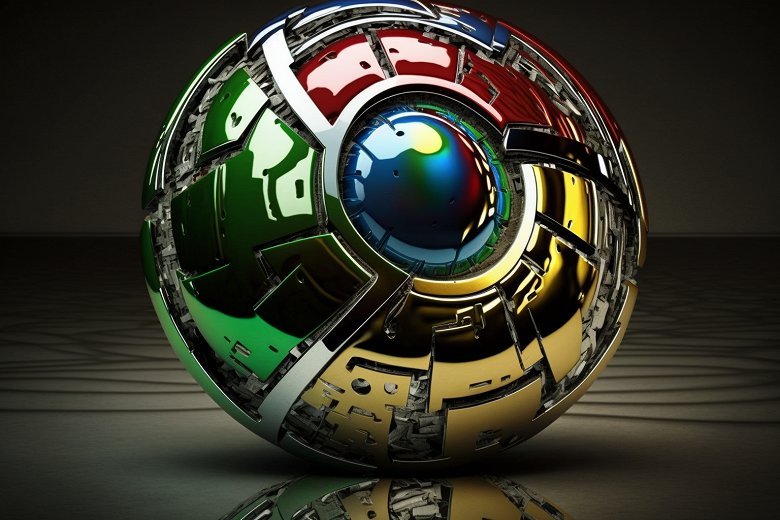
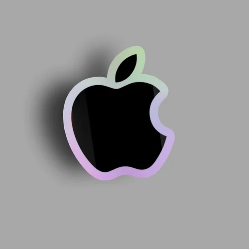

Ласкаво просимо!
Сайт зроблено для навчання
HTML
HTML (англ. HyperText Markup Language — мова розмітки гіпертексту) — стандартизована мова розмітки документів для перегляду вебсторінок у браузері. Браузери отримують HTML документ від сервера за протоколами HTTP/HTTPS або відкривають з локального диска, далі інтерпретують код в інтерфейс, який відображатиметься на екрані монітора.
Елементи HTML є будівельними блоками сторінок HTML. За допомогою конструкцій HTML, зображення та інші об'єкти, такі як інтерактивні форми, можуть бути вбудовані у візуалізовану сторінку. HTML надає засоби для створення структурованих документів, позначаючи структурну семантику тексту, наприклад заголовки, абзаци, списки, посилання, цитати та інші елементи. Елементи HTML окреслені тегами, написаними з використанням кутових дужок. Теги на кшталт < img /> чи < input /> безпосередньо виводять вміст на сторінку. Інші теги, такі як < p >, оточують текст і надають інформацію про нього, а також можуть включати інші теги як піделементи. Браузери не показують теги HTML, але використовують їх для інтерпретації вмісту сторінки.
HTML можна вбудовувати програми, написані на скриптових мовах, наприклад JavaScript, які впливають на поведінку та вміст вебсторінок. Включення CSS визначає вигляд і компонування вмісту. World Wide Web Consortium (W3C), який супроводжує стандарти HTML та CSS, заохочує використання CSS над явним презентаційним HTML з 1997 року.[1]
Язык XHTML является более строгим вариантом HTML, он следует синтаксису XML и является приложением языка XML в области разметки гипертекста Википедия.

CSS
Даний підручник спробує навчити вас використовувати каскадні таблиці стилів — важливий елемент веб-дизайну. Перед його прочитанням бажано мати певне уявлення про HTML.
Каскадні таблиці стилів (англ. Cascading Style Sheets) — спеціальна мова, що використовується для запису оформлення сторінок, написаних мовами розмітки даних.
Таблиці стилів дають змогу спростити процес створення сторінок і поліпшити їхній зовнішній вигляд. Концепція стилів подібна до ідеї стилів, яка реалізована в сучасних текстових редакторах — текст спочатку вводять, а потім форматують, користуючись стилями. Застосування стилів дає змогу вводити на сторінку потрібні тексти та інші елементи, не задумуючись над їхнім зовнішнім виглядом і розташуванням.
Таблиці стилів програміст зазвичай створює окремо від html-файлу. Під час створення html-файлу він концентрує увагу на змісті сторінки, а не на її зовнішньому вигляді, а під час створення таблиці стилів — навпаки. Отже, стилі дають змогу розмежувати етапи створення html-файлу й удосконалення зовнішнього вигляду сторінки.
Вважатимемо, що таблиця стилів уже створена. Тепер нам потрібно забезпечити взаємодію таблиці з html-файлом. Розглянемо три способи такої взаємодії: зв'язування, імпортування, вбудовування.
Википедия.

JS
JavaScript (JS) — динамічна, об'єктно-орієнтована[5] прототипна мова програмування. Реалізація стандарту ECMAScript. Найчастіше використовується для створення сценаріїв вебсторінок, що надає можливість на боці клієнта (пристрої кінцевого користувача) взаємодіяти з користувачем, керувати браузером, асинхронно обмінюватися даними з сервером, змінювати структуру та зовнішній вигляд вебсторінки.
JavaScript класифікують як прототипну (підмножина об'єктно-орієнтованої), скриптову мову програмування з динамічною типізацією. Окрім прототипної, JavaScript також частково підтримує інші парадигми програмування (імперативну та частково функціональну) і деякі відповідні архітектурні властивості, зокрема: динамічна та слабка типізація, автоматичне керування пам'яттю, прототипне наслідування, функції як об'єкти першого класу.
Википедия.

Anguar
Angular (зазвичай так називають фреймворк Angular 2 або Angular 2+, тобто вищі версії) — написаний на TypeScript front-end фреймворк з відкритим кодом, який розробляється під керівництвом Angular Team [Архівовано 18 серпня 2021 у Wayback Machine.] у компанії Google, а також спільнотою приватних розробників та корпорацій. Angular — це AngularJS, який був переосмислений та перероблений тією ж командою розробників.
Назва - Спочатку переписаний AngularJS отримав назву Angular 2 від команди розробників, яка над ним працювала, але це призвело до плутанини серед інших розробників. Аби пояснити різницю між ними та наголосити, що це окремі проекти, команда вирішила для фреймворків версій 1.X застосовувати назву AngularJS, а для версій, починаючи з 2.0, — Angular без JS.
Википедия.

Google
Google, українською мовою ґуґл[19], англ. Google LLC (вимовляється [ˈɡuːɡəl]) — американська публічна транснаціональна корпорація, яку заснували 1998 року аспіранти Стенфордського університету Ларрі Пейдж і Сергій Брін.
Найпопулярніший пошуковий сервіс станом на 2021 рік, має у власності, зокрема, YouTube і Blogger. Штаб-квартира корпорації розташована в Кремнієвій долині, представництва компанії також є в Північній Америці, Австралії, Європі й Азії.
Google.com — найвідвідуваніший сайт у світі (поряд із facebook.com). Водночас компанію звинувачують у порушенні права на приватність, авторського права та цензури[20][21].
Google заснована 4 вересня 1998 року як приватна компанія, що займається розробкою, розвитком і дизайном найпопулярнішого в інтернеті пошукового сервісу. Google підтримує та розробляє низку інтернет-сервісів і продукції, отримуючи дохід передусім від реклами, завдяки своїй програмі Ads. Компанію заснували Ларрі Пейдж і Сергій Брін. 19 серпня 2004 року Google розпочала продаж своїх акцій на фондовому ринку. Тоді Ларрі Пейдж, Сергій Брін та Ерік Шмідт домовилися про спільну співпрацю протягом 20 років, до 2024 року. Проголошеною місією компанії від самого початку була «організація світової інформації, забезпечення її доступності та користі для всіх», а неофіційне гасло компанії, придумане інженером Google Полом Бакгейтом — «Не будь злим» (англ. Don't be evil). 2003 року компанія переїхала до своєї нинішньої штаб-квартири в Маунтін-В'ю (штат Каліфорнія), де працюють близько 28 тис. робітників.
Google керує понад мільйоном серверів у центрах опрацювання даних (ЦОД) у всьому світі, опрацьовуючи більше мільярда пошукових запитів і 24 петабайт користувацьких даних щодня. Швидкий ріст Google з моменту його заснування призвів до виникнення великої кількості продукції, не пов'язаної безпосередньо з головним продуктом компанії — пошуковою системою. Google має онлайн-продукти на кшталт поштового сервісу Gmail. У компанії є також і десктопні продукти, такі як браузер Google Chrome і програма обміну миттєвими повідомленнями Google Hangouts. Крім того, Google веде розробку мобільної операційної системи Android, яка використовується великою кількістю смартфонів, а також операційної системи Google Chrome OS.
Википедия.

Apple
Apple Inc. (колишня Apple Computer, Inc.) — американська технологічна компанія з офісом у Купертіно (Каліфорнія), яка проєктує та розробляє побутову електроніку, програмне забезпечення й онлайн-сервіси. Є першою американською компанією, чия капіталізація перевершила 1 трлн доларів США. Це сталося під час торгів акціями компанії 2 серпня 2018 року[15]. Цього дня компанія також стала найдорожчою публічною компанією за всю історію, обійшовши капіталізацію попереднього рекордсмена — компанії PetroChina (1,005 трлн доларів у листопаді 2007 року)
У середині серпня 2020 року капіталізація Apple виросла до 2 трлн дол.[16] 3 вересня 2020 року ціна компанії різко впала — на 8 % (180 млрд), що стало рекордом для фондового ринку, але все одна вартість була більшою за 2 трлн дол
Про компанію
До пристроїв, що розробляються компанією належать смартфон iPhone, планшет iPad, персональний комп'ютер Mac, портативний медіа-плеєр iPod і розумний годинник Apple Watch. Розроблене компанією програмне забезпечення включає операційні системи macOS та iOS, медіа-плеєр iTunes, веббраузер Safari та застосунки iLife та iWork. До онлайн сервісів належать iTunes Store, iOS App Store, Mac App Store та iCloud.
Ким була заснований Apple
Стівом Джобсом, Стівом Возняком та Рональдом Вейном 1 квітня 1976 з метою розробки та продажу персональних комп'ютерів. Її було зареєстровано як Apple Computer, Inc. 3 січня 1977 і було перейменовано на Apple Inc. 9 січня 2007 р., щоб відобразити зміну її пріоритетів у бік побутової електроніки. Apple було включено до індексу Dow Jones Industrial Average 19 березня 2015.
Apple
це найбільша у світі компанія в області інформаційних технологій за виручкою, найбільша у світі технологічна компанія за обсягом активів і третій найбільший у світі виробник мобільних телефонів. 25 листопада 2014, на додаток до того, що вона найбільша публічна корпорація у світі за капіталізацією ринку, Apple стала першою компанією у Штатах, вартість якої перевищила 700 мільярдів $ США. Компанія наймає 115 000 працівників на постійній основі станом на липень 2015 і має 453 магазини роздрібної торгівлі у шістнадцяти країнах на березень 2015 року. ITunes Store — найбільший у світі музичний магазин.
Википедия

Добровольский Ігор Русланович
Адрес: Україна, Черкаська обл.
Телефон: +(380)634058581
Email: igor7dobro@gmail.com